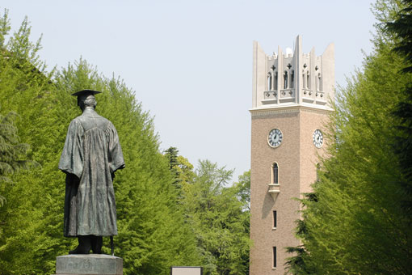

Let me introduce myself again...
As you may see at the homepage, my name is Makoto Oguchi attending Babson College in the US from Japanese University. Yes, I am an exchange student!This semester, 2022 Spring, is my last semester so I am making this website to introduce Japan as an exchange for my time in the US.
So far, we have learnt basic Japanese sentences and its structure. Now, I want you to know about my university in Japan called "Waseda University". As an exchange student, I think I obligate to let people know about my uni...
About Waseda
Waseda University is often ranked best private university in Japan, with the rival of Keio University. Waseda University was founded in 1882 by Okuma Shigenobu. Okuma was the 8th prime minister in 1898. Kuma in Japanese means bear, so Waseda's mascout is Waseda Bear. There are several divisons in Waseda but faculty of political science and economics are well known.
Here are lists of all undergraduate divisions/schools in Waseda University.
If international students come to Waseda University, they are likely to study at School of International Liberal Studies (SILS) is the school for international students.
SILS
About one third of students in SILS are international students. There are several study plans, and SP3 is the plan for exchange students. What's unique about SILS is that SP1 students who tend to be Japanese students require to go 1 year study abroad to graduate (This requirement may be modified due to COVID.)
There are many courses students can take and most of them are conducted in English. There are many Japanese classes for different levels. Thus, students who are not confident in Japanese or study Japanese can take such classes. There are 7 clusters of courses, and here are lists.
- Life, Environment, Matter and Information
- Philosophy, Religion and History
- Economy and Business
- Governance, Peace, Human Rights and International Relations
- Communication
- Expression
- Culture, Mind and Body, Community
Videos!!
Here is my friend at Waseda. She is introducing her life in Japan as Waseda student. She now studies at NYU as an exchange student.
Contact → ← Japanese Sentences